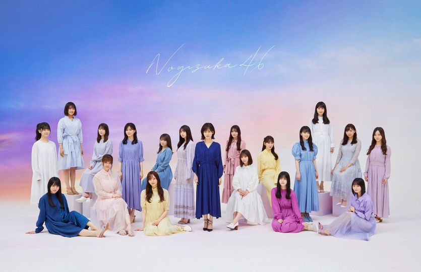
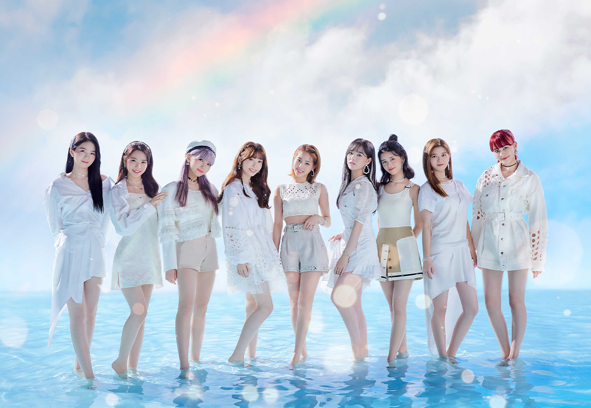

最終課題
Sunao Tanaka official Web Site
これまで作成した課題はこちらからリンクできます↓
乃木坂26thシングル 僕は僕を好きになる 2021年1月27日発売！！

山下美月初のセンター曲、10か月ぶりのリリース MVをお楽しみに！！
さらに最近ハマってきてるNiziU

日本人9人組のガールズグループ 韓国のniziprojectでメンバーを決定 昨年デビュー 12月にシングルを発売したばかり。 ちなみにメンバーのマコは福岡県八女市出身
作成者：田中 素直 作成日：2021/1/20